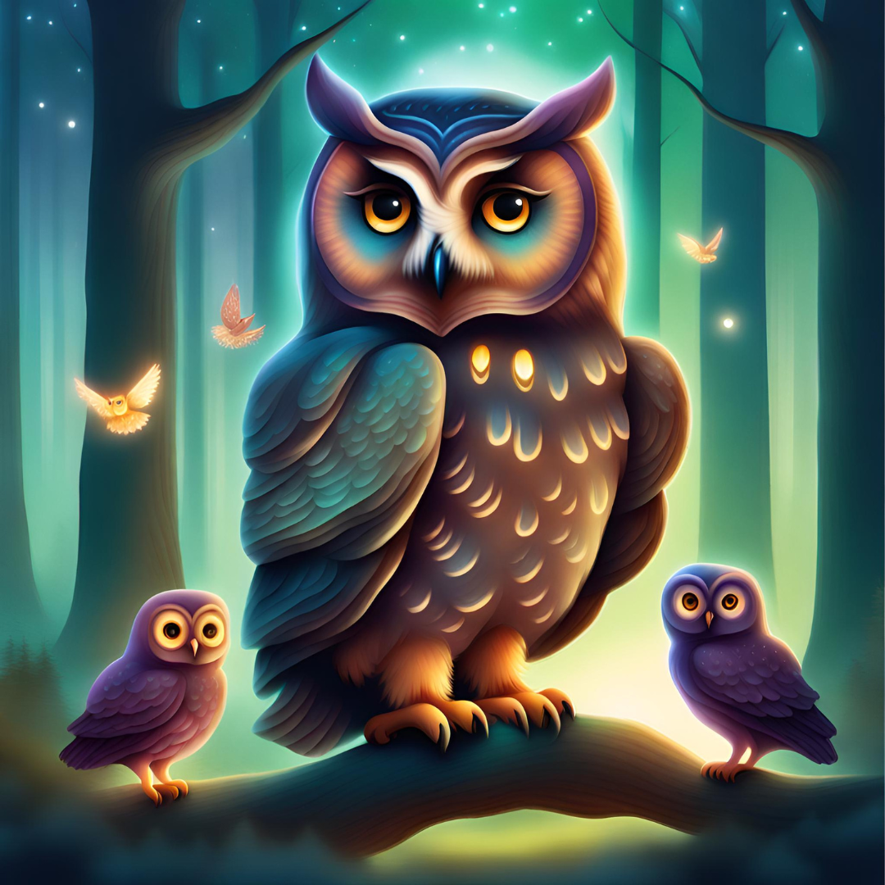

Once upon a time, in a little village, there was a girl named Daisy. She was very curious and loved her dog, Elise, a lot. But one day, Elise went away, and Daisy felt very sad.

One sunny day, Daisy decided to go for a walk outside her village. She found a secret path that led to a magical forest called Sunnyvale Forest. In the forest, there were talking animals and beautiful flowers.

Daisy became friends with the animals and learned important things like being kind to nature and others. She loved visiting the magical forest because it made her happy.
One day, Daisy heard about a special crystal hidden deep in the forest. It was said that the crystal could grant any wish. Daisy wanted to wish for Elise to come back.

As Daisy went on her adventure to find the crystal, she met challenges but did not give up. Finally, she found the crystal.
But just as she was about to make her wish, a wise owl warned her that using the crystal would hurt the forest.

Daisy had to decide: Should she make her wish and bring Elise back, or leave the crystal and protect her new friends' home?